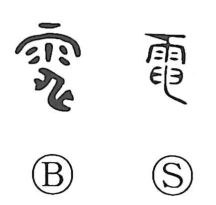

電

Kun: inazuma | On: den
lightning ・ electricity
Explanation
電 combines 雨, rain, with 申, a picture of lightning. The early 申 has a central streak whose ends bend in opposite directions. In 電, the lower bend to the right remains especially visible.
Adding 雨 identifies the flash as an atmospheric event. 電 is the light of the storm; related 霆 concerns its prolonged rumbling sound. The older graphic shape therefore distinguishes the visible flash from the accompanying thunder.
The sudden light gives flashing and lightning-like speed. In modern use the word extends to electricity, preserving the connection between lightning and electrical force even in applications far removed from a storm.